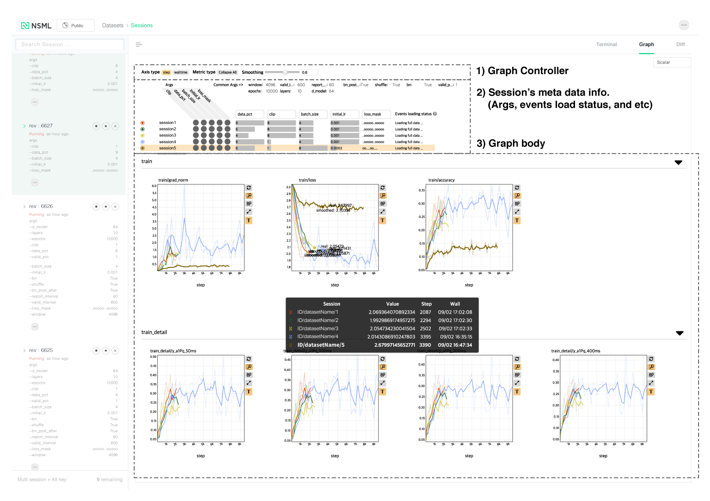

Graph visualization¶
You can see the scalar value of the variable values passed to nsml.report() in real time.
The NSML scalar plot consists of three parts: Controller, Meta info., and Body as shown below.

Graph Controller¶
You can use the functions to control the whole graph.

Axis type: You can change the x axis by step or walltime.
Metric type: If there are many variables you want to check on the graph, you can fold and unfold all the graphs so that you can easily check the variable graph you want to check.
Note
In the NSML scalar graph, the criteria for the metric type are identified using a ‘/’ delimiter. For example, if ‘train/loss’ and ‘train/acc’ are recorded in the events data, one container of ‘train’ is created, and the metric dots of ‘loss’ and ‘acc’ are visualised.
Smoothing: You can adjust the line smoothness of each sessiond graph supported by Tensorboard. (ref .: tensorboard )
Meta Info.¶
Among meta data’s session, it re-expresses and displays the information that is useful in analyzing graph. also shows the loading status of event data.
If the session of interest is single, the args entered at the beginning of the session are listed as simple text. If you look at multiple sessions together, separate common args (common args) and non-common args in the sessions. In non-common args, you can use the following functions:
Note
‘args’ expressed in the Meta Info. panel are expressed using only the values entered in ‘-a (-args’ at the time of session creation. When entering the parameters using -a option, you must enter the format ‘–key value’ to display it correctly.
Toggle
The toggle button next to the name of each session toggles the plot of each session on and off.
Sort
When comparing and analyzing multiple sessions, you can easily sort out desired sessions by sorting by the specific argument value.
Args selection
If the number of arguments in the session is large, you can check the desired argument by selecting it in the selection column.
Events loading status
NSML scalar plot uses ‘Reservoir sampling’ as a sampling technique (ref .: reservoir ) to prevent web termination due to a lot of data loading. The sampling technique is mainly used for plotting unknown size and large size streaming data.
Note
The maximum number of scalar that each plot line can have is limited to 1,000.
Graph for Scalar data¶
You can see the variation graph of the selected session.

Variable graph supports the following functions.
Mouse hovering & highlight session
In the plot, you can search for the closest session line, hightlight the session line with bold lines, and see the session represented in bold type in the tooltip table.You can also hightlight the session in Meta Info. panel above to easily see what argument the current session has.
Zoom
NSML Scalar plot uses box zoom by default. You can select the desired area using the mouse and see the enlarged screen. If you want to initialize the zoom, you can initialize it with a simple click in the plot without creating a region with the mouse. You can also reset it using the ‘zoom reset’ button next to plot.
Sub utils
You can utilize the following functions by utilizing the util to the right of each plot.
Zoom reset
Initializes Zoom. The plot is initialized to fit the area of the current data.
Zoom type
Zoom type can be changed. By default, you can use box zoom, and you can use mouse wheel based zoom function.
Expand Plot
Plots can be viewed in larger sizes.
Text on/off
You can turn text displayed on mouse hovering on/off.
Show Custom Interval Area
Displays the std value entered in nsml.report in the form of interval area.See Advanced usage for details.
Show SD. interval of Moving Avg.
Shows standard deviation of moving average (smoothing) in the form of interval area.
Show aggregated mean line
If multiple lines of the session are visualized together, a line is drawn for the average value of y relative to the x value of each line, and the standard deviation of the mean value is displayed in the form of an area.
Advanced Usage¶
Various extensions are possible using nsml.report.
Custom Standard deviation
If you want to see the interval area with the error bar or standard deviationfor the value you want to report, you can do nsml.report in the form of’metricName @ std’ (be sure to enter ‘std’ keyword after ‘@’ ).
Note
If you want to see the standard deviation of the loss value for test/lossyou can type nsml.report ({“test__loss”: 1.2, “test__loss@std”: 0.01, …}).
{kind=link}
Graph for Vector data
If you want to report multiple values from one session in a single plot (e.q., vector, list), you can use nsml.report in the form of ‘metricName@vector: element_name’’@’, And ‘element name’ after ‘:’).
Note
If you want to see a test / vector consisting of a, b, c, d in one line plot, you can use nsml.report ({“test__vector@vector:a”: 1.2, “test__vector@vector:b”: 0.2, … })(For python you need to pass the dictionary object to nsml.report).
{kind=link}
Graph for Stacked data
If you want to see multiple values of a report from a session together in an area plot(e.q., distribution), you can do nsml.report in the form ‘metricName@stack:stack_name’And stack name after the’:’).
Note
If you want to see a test / distribution of a, b, c, and d in one area plot, you can use nsml.report ({“test__distribution@stack:a”: 1.2, “test__distribution@stack:b”: 0.2, … }) (For python you need to pass thedictionary object to nsml.report).
Note
For a stack area plot, one stack metric and corresponding stack elementsmust be passed at once using nsml.report (that is, the value of each of the same elements must have the value of the x-axis). For example, to see an area plot of a, b, c, and d, you need to put a, b, c, and din one nsml.report ({}) at a time.